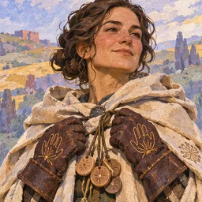
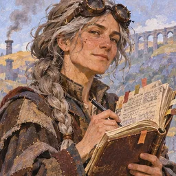
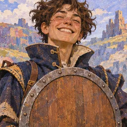
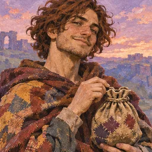
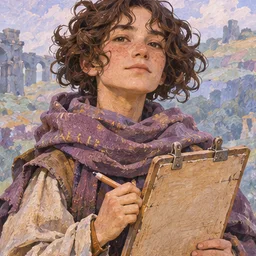

Яра Узелкова
воин 3 · ОЗ 31 · КД 11 · Скорость 30 фтГорная проводница, желающая подписывать собственную работу
Короткие тёмные волосы, куртка с разными заплатами, обычный дорожный канат через плечо.
Ты уже вывела из осыпи семерых путников, но на благодарственной доске написали только имя Рухомира. Первый самостоятельный заказ позволит купить собственное снаряжение.
Открыть фигурку для поля
Оружие и заклинания
Оружие · Длинный меч, Ручной топор

Ник Боковой Шаг
плут 3 · ОЗ 24 · КД 13 · Скорость 30 фтНаблюдательный любитель коротких троп
Веснушки, широкие рукава, карандаш за ухом и сапоги с неожиданно чистыми подошвами.
Твоя старшая кузина Зоя записалась на видовую прогулку. Ты хочешь, чтобы к твоим предупреждениям относились серьёзно, но сам терпеть не можешь, когда тебя удерживают дома.
Открыть фигурку для поля
Оружие и заклинания
Оружие · Рапира, Короткий лук

Эда Открытая Ладонь
жрец 3 · ОЗ 24 · КД 11 · Скорость 30 фтСтранствующая служительница дорожного очага
Светлый плащ, связка деревянных дорожных жетонов и тяжёлые перчатки с вышитыми ладонями.
Люди привыкли звать тебя после беды. Ты хочешь провести поход, в котором забота начнётся раньше, а отдых не потребуется заслуживать изнеможением.
Открыть фигурку для поля
Оружие и заклинания
Оружие · Боевой посох
Заклинания · Лечащее слово, Обнаружение магии

Полин На Полях
волшебник 3 · ОЗ 20 · КД 12 · Скорость 30 фтПолевой чародей с привычкой записывать сомнения
Седая коса, закопчённые очки и тетрадь, в которой замечания занимают больше места, чем основной текст.
Ты привык исправлять ошибки на бумаге. Теперь хочешь проверить свои наблюдения о ветре в настоящем походе и однажды написать честное «пока не знаю».
Открыть фигурку для поля
Оружие и заклинания
Оружие · Боевой посох
Заклинания · Обнаружение магии, Туманный шаг

Там Второй Шаг
воин 3 · ОЗ 31 · КД 11 · Скорость 30 фтМолодой защитник, которому надоело стоять сзади ради чужого портрета
Высокий воротник, широкая улыбка и круглый щит с ещё не выбранной эмблемой.
Денвар предлагал тебе место в красивой массовке. Ты хочешь совершить собственное нужное дело, даже если оно не попадёт на афишу.
Открыть фигурку для поля
Оружие и заклинания
Оружие · Длинный меч, Ручной топор

Мира Свой Голос
плут 3 · ОЗ 24 · КД 13 · Скорость 30 фтБывшая глашатайка, разучившаяся любить громкие преувеличения
Серебряные серьги, потёртый жилет и складная табличка, на которой удобно писать крупными буквами.
Ты когда-то объявляла драконьи подвиги. Теперь хочешь рассказать историю, где слушателю не нужно скрывать собственное участие за знаменитым именем.
Открыть фигурку для поля
Оружие и заклинания
Оружие · Рапира, Короткий лук

Сава После Заката
жрец 3 · ОЗ 24 · КД 11 · Скорость 30 фтХранитель дорожных обещаний и плохой игрок в шашки
Каштановые кудри, мягкие сапоги и мешочек с разномастными шашечными камнями.
Ты несколько раз играл с Рухомиром и понял, что он ужасно не любит проигрывать. Тебе интересно дружить с ним, когда для встречи не требуется бедствие.
Открыть фигурку для поля
Оружие и заклинания
Оружие · Боевой посох
Заклинания · Лечащее слово, Обнаружение магии

Эс Чёткая Черта
волшебник 3 · ОЗ 20 · КД 12 · Скорость 30 фтНачинающий волшебник, любящий ясные условия
Вьющиеся волосы, лиловый шарф и дощечка, на которой всегда остаётся место для поправок.
Ты мечтаешь о больших чарах, но уже устал от слов «волшебник что-нибудь придумает». Хочешь научиться объяснять свои настоящие возможности без оправданий.
Открыть фигурку для поля
Оружие и заклинания
Оружие · Боевой посох
Заклинания · Обнаружение магии, Туманный шаг